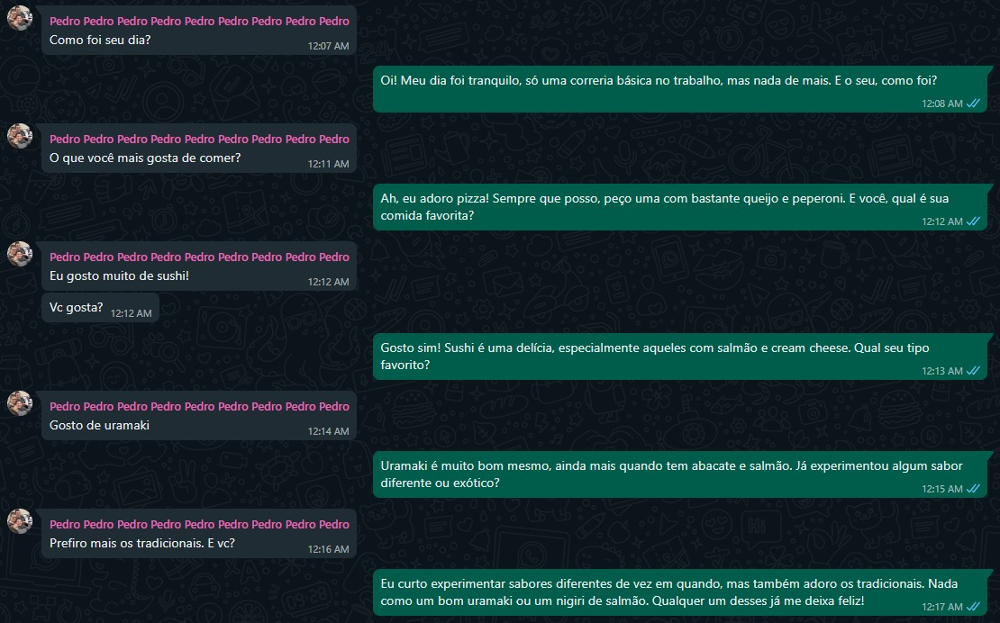

-
O que é?
O Teste de Turing é um conceito proposto por Alan Turing em 1950 como um meio de determinar se uma máquina pode exibir comportamento inteligente equivalente ou indistinguível do de um ser humano.
-
Funcionamento
O teste envolve um humano (juiz) que interage através de texto com dois participantes ocultos: um humano e uma máquina. Se o juiz não puder distinguir corretamente qual é qual com base nas respostas recebidas, então a máquina é considerada capaz de exibir inteligência artificial equivalente à humana.
-
Importância
O teste de Turing foi um marco importante no campo da inteligência artificial, pois estabeleceu um critério prático e objetivo para avaliar a capacidade de máquinas de realizar tarefas que requerem inteligência humana. Embora tenha suas críticas e limitações, continua sendo uma referência fundamental na história e na filosofia da inteligência artificial.
-
Na prática
Abaixo, está o Teste de Turing realizado pelo grupo, no qual o juiz é o aluno Pedro Leão (nº30 - 3ºF), o humano com quem ele conversava é o aluno Migliorini (nº12 - 3ºF), e a IA utilizada foi o Chat GPT. O teste foi realizado por meio do Whatsapp, de modo que o aluno Leão🦁 conversou com o humano e a IA um de cada vez.
Esta conversa foi a feita com o Chat GPT

Esta conversa foi a feita com o aluno Migliorini
Conclusão
O maior Leão🦁 da Terra concluiu, após as conversas, que no primeiro diálogo era a IA e que no segundo diálogo era o Migliorini, portanto, ele acertou. O que mostra que o Chat GPT não é uma IA tão boa para esse teste.